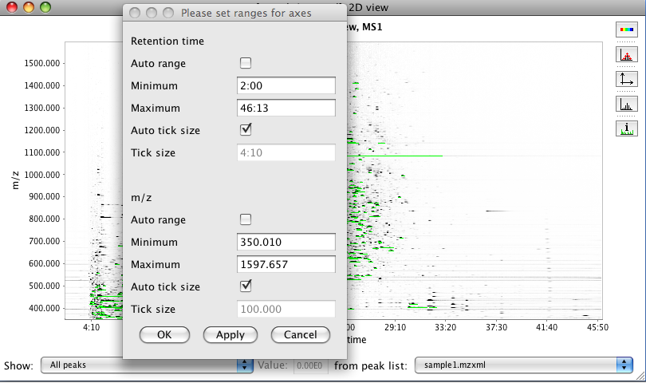
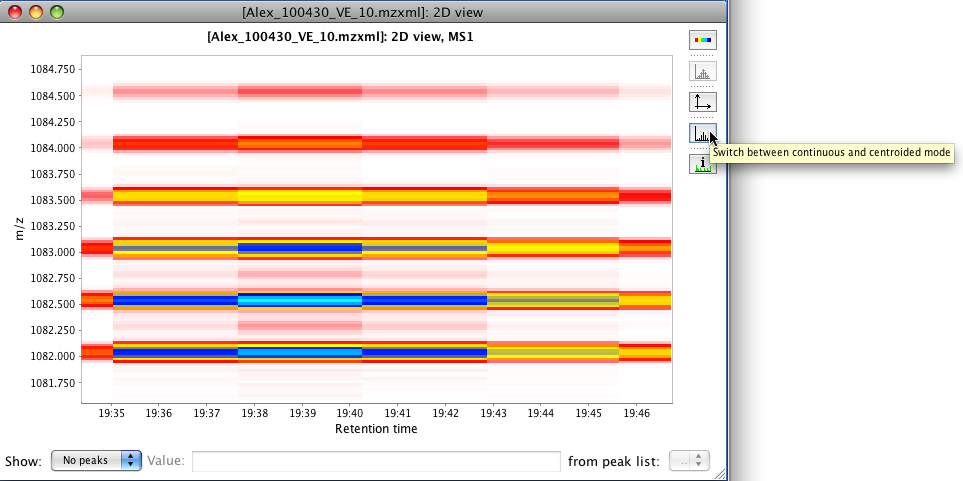
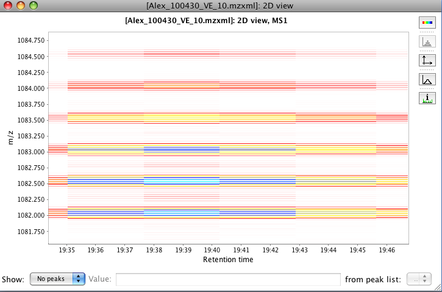
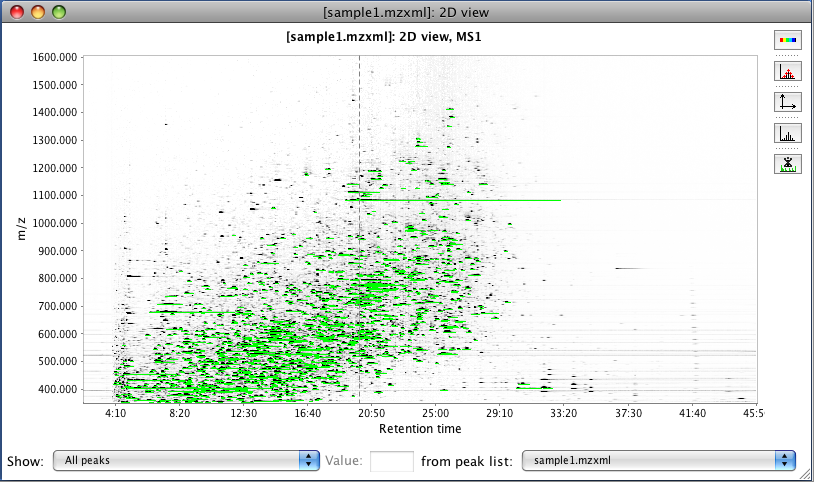
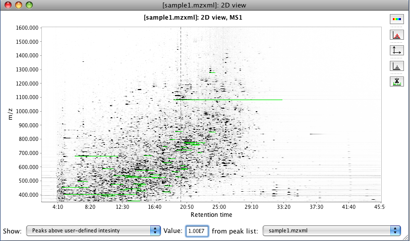

This tool displays a plot of two dimensions, where X axis corresponds to retention time and Y axis is the m/z value. This visualization of spots in the plot corresponds with the intensity of the data in that region.
Additionally in the parameters window, the button "Set automatically" allows the user to set all the ranges automatically. MZmine will use the maximum ranges allowed by the raw data.
This plot is using the third part library JfreeChart for its basic functionality. To zoom in, drag the mouse from left to right, selecting the area to zoom. To zoom out drag the zoom from right to left.
In the right part of the plot exist a group of icons called toolbar. In this the user can manipulate the appearence of the plot.

The intensity of the plot can be manipulated by the button "Switch palette". The intensity will increase with every click until the chart changes to red color. The intensity of the signal is displayed by difference in color or gray scale.

To display the data points used to from a spot or an identified peak, toggle the button "Toggle displaying of datapoints in continuous mode".

To adjust the range of the plot use the button "Setup range for axes". After click a pop-up window will appear with text fields where the user can adjust the ranges in both axis or set to automatic range.

The button "Switch between continuous and centroid mode" changes the visualization of the data. If the color palette was selected is easier to notice the change. This option depends on the orginal raw data format.
 
The tooltip that appears when the mouse is over each spot can contain information of the identified peak in that region. The related peak information can be omitted by using the button "".


At the bottom of the panel the user can select the list of peaks to display in the plot (right combo box).
This feature depends on the peak list associated to the visualized raw data in the current project.
Also the user can filter the number of displayed peaks by a threshold value or by number of most intense peaks.
 